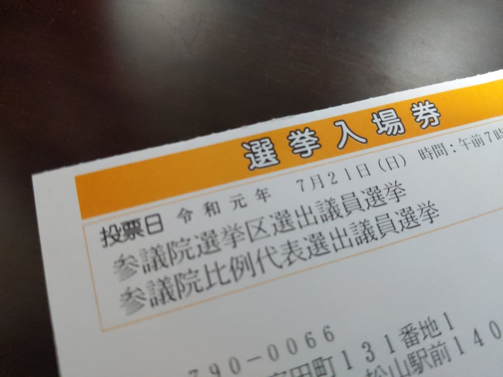

第25回参議院議員通常選挙
公開日：

速報段階だけど、自分の投票した候補は落選したらしい。まぁ、対立候補の方が見栄えするしなぁ……でもね、「自分の所属政党」すら明らかにできない候補者なんて、どうして信用できようか？ 当確がでたときに NHK がよいツッコミをしていたのだが――「玉木さんが応援に来ていましたが、今後は国民民主に合流するんですか？」「無所属では今後の国会活動に大きな制約があるかと思うのですが、どこかの会派に合流するのですか？」――、それにちゃんと答えられない人が、どこにも所属ぜず一人で、どうやって「消費税率の凍結（←そもそも2カ月ちょいしかないんだが？）」や「子育て世代の支援」ができるというのか？ 当選後の所属先の政党は「多く選択肢がある」というけど、当選した後の行動にフリーパスを与えろというのか？
そもそも「野党統一候補」！ なんて愚劣なやり方だろう。だったら、党ごと「統一」してしまえばいいのに、変に「鶏頭となるも牛後となるなかれ」を実践する人たちばかりだから、それすらままならない。難儀なことだ。
ともあれ、今回選出された議員が活躍――とまでは期待しないが、自分たちの職責を十分に全うしてくれんことを願う。で、議席を無駄にしないためにも、どこかの党に所属すること。そして、次は所属政党を明らかにして出馬するように。無所属の議員なぞ、首輪なしに野放しなイヌと変わらない。当選したは最後、制御することは不能だ――政党に所属していてもうまくいかないのに！
「（自分たちの利益になる）から、投票に行くべきだ」
こうした意見をよく耳にするが、どうなのだろうか。「若者は自分の将来のために投票に行くべきだ」――まぁ、そうなのかもしれないけど、いちいち理由をつけないと選挙に行けないだろうか。
「日本は民主主義だ」。選挙に行く理由なぞ、これで事足りる。民主主義というのは……いろんな解釈があるのを知ってる上で敢えていうなれば、要するに「国民一人一人がその国の主」である仕組みだ。その主が選挙に行かない。これほどの怠慢はない。投票にすらいかない国主を自らの上に戴き、よい国を築くことができるだろうか。
民主主義に対するさまざまな考えがある中で、自分はこれを「強い意味での民主主義」と呼んでいる。
これに対する弱い意味での民主主義というのは、「とりあえず政権首脳部に民意がいくばくか反映されていればいい」という考え方だ。やり方としては、弱い民主主義の方が“楽”でよい。政治なぞ特別な教育を受け、見識と人脈を持ち、できれば見栄えも立派なエリートに任せて、下々は自らの生業に励めばよいからだ。そもそも、バカな国民は適切な人物を選ぶ能力すら備えていない――が、「誰がふさわしくないかは理解することができる」（マキャヴェリ）。弱い民主主義で大事なのは「ふさわしい元首を選ぶ権利」よりも、「ふさわしくない元首を辞めさせることのできる権利」の方だ。
一方、「強い意味での民主主義」はバカな国民にも国主にふさわしい能力と徳を要求する――ただし、内的に湧き上がる自己束縛として。強い民主主義の問題は、その実現性の難しさよりも、容易に卓越主義に転嫁しやすいことだろう。「（なるべく）正しく生きるべき」というのは、自分が自分に課すならばともかく、そうしない他人を低く評価したり、他人にそれを強要することに繋がりやすい。それをちゃんと弁えていないと、簡単にエリート主義に陥ってしまうわけだ。すでに自立した大人となっている有権者にそれを求めるのは失礼でもあろう。社会には毎日、真っ白な未来の有権者が参加する（そして、古い有権者が退場していく）から、彼らを教育するときに“自然とそう仕向け”、強い意味での有権者を少しずつ増やしていくしかない。それも、100年200年ではなく、経済や社会の後退をも乗り越えながら、千年や万年の単位で。というのも、市民社会というのは高度な経済や社会、法の束――文明――に支えられており、それが崩壊すれば教育よりまず、自分たち一人一人が食べていくことを優先していかざるを得ないからだ。
なるほど、エルフでもなければ、強い民主主義の実現をその目で見るのは難しい。
ところで、人間の法・権利にもっとも適した体制は共和的な体制であるが、これは樹立するのがもっとも困難であり、維持するのはさらに難しい体制である。この体制は、 "天使"たちだけにふさわしい国だと言われることも多いほどである。
カント『永遠平和のために』